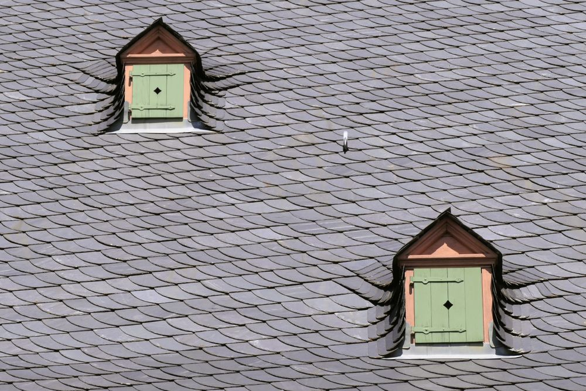

01
Couverture & réfection
Quand la couverture a fait son temps, on la refait entièrement : dépose, contrôle de la charpente, écran sous toiture, pose neuve.
- Ardoise naturelle, tuile terre cuite ou mécanique
- Faîtage, rives et arêtiers repris
- Chantier bâché chaque soir